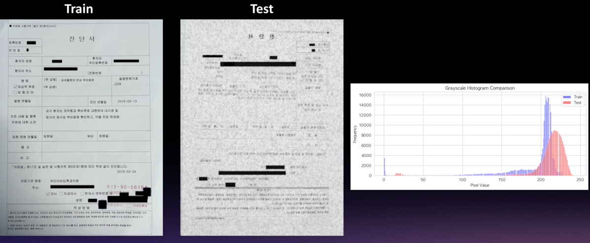
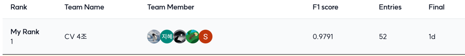
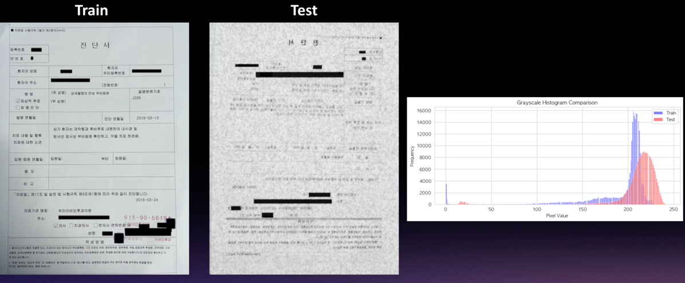
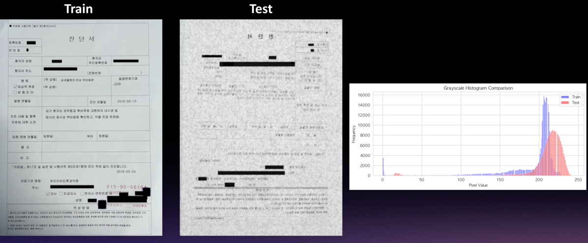

금융, 의료, 보험 등 산업 전반의 문서를 이미지 기반으로 분류하는 문서 타입 분류 대회에 참가하여, 다양한 이미지 증강과 앙상블 모델을 활용해 고성능 모델을 개발한 프로젝트입니다.
⏱️ 기간 및 인원
기간: 2025.02.14 ~ 2025.02.25
인원: 총 5명
🛠 기술 스택
프로그래밍 언어 및 도구: Python, Jupyter Notebook, Pandas, torchvision, Wandb
사용 모델: ResNet50, EfficientNet-B3, YOLOv12
🔧 핵심 기능
✔ 이미지 전처리 및 증강(Augraphy, Albumentations)
📊 이미지 보기📌 EDA1: train & test data의 target이 어떻게 구성되어 있는지 파악📌 EDA2: 각 target 별 train data의 개수를 확인

📌 시도해본 다양한 증강 기법들
✔ 다양한 모델 실험 (ResNet50, EfficientNet-B3, SwinTransformer-T)
📊 이미지 보기📌 wandb를 통한 모델 성능 비교
✔ Sinogram 변환 실험 적용
📊 이미지 보기📌 문서 이미지에 Radon 변환을 적용하여 Sinogram으로 변환한 결과
✔ YOLOv8로 타이틀 탐지 실험
📊 이미지 보기📌 Label Studio를 통해 특정 target의 train data 라벨링 진행
✔ Wandb sweep을 통한 하이퍼파라미터 튜닝
📊 이미지 보기📌 wandb_sweep 기능을 이용해서 가장 적절한 파라미터 탐색 및 적용
✔ Soft Voting 앙상블 적용
🧑💻 내가 기여한 부분
✔ EDA 기반 클래스 분포 분석 및 전처리 전략 설계
✔ 다양한 데이터 증강 실험(Augraphy, Albumentations) 적용
✔ Sinogram 변환 실험 주도:
문서 이미지를 Radon 변환하여 sinogram 형태로 바꾸는 실험을 진행했습니다.
이 방식은 이미지의 노이즈를 주파수 패턴으로 바꿔 제거 가능하게 하며, 회전 및 이동에 대한 불변성을 기대할 수 있었습니다.
일반적인 CNN이 자연 이미지에 최적화되어 있어 sinogram 이미지에 대한 특징 추출이 어렵다는 한계를 확인했고,
이를 통해 Radon-domain CNN과 같은 특화된 구조의 필요성을 검토하게 되었습니다.
결과적으로 이 시도는 sinogram을 직접 학습에 활용하기보다는 전처리나 특화 구조와 함께 사용하는 것이 효과적이라는 인사이트를 제공했습니다.
🐛 트러블슈팅
📌 Sinogram 변환 실험 결과 성능 저하 문제
- 문제 배경:
문서 이미지에 Radon 변환을 적용해 Sinogram 형태로 변환하면 노이즈 제거, 회전 불변성 등의 효과를 기대할 수 있었으나, 실제 실험에서 기존 CNN 기반 네트워크와의 호환성 문제로 인해 오히려 성능이 저하되는 문제가 발생했습니다. Sinogram 이미지는 자연 이미지와 다른 주파수 기반 표현을 가지기 때문에, 일반적인 Conv 필터들이 유효한 특징을 추출하지 못하는 상황이었습니다.
- 해결 방법:
Radon 변환을 그대로 학습 데이터로 사용하는 대신, 전처리 단계에서 원본 이미지와 결합하거나, sinogram의 일부 특징을 활용하는 방향으로 전환했습니다. 또한 Radon-domain에 최적화된 네트워크 구조(Radon-domain CNN 등)를 탐색하는 방향성을 추가로 검토하며, sinogram 자체는 학습보다는 특성 분석 및 noise filtering 도구로 사용하는 것이 더 효과적이라는 결론을 도출했습니다.
📌 특정 문서 유형에서의 높은 오탐률 문제
- 문제 배경: 모델 성능 평가 중 입퇴원확인서, 진단서, 외래_진료확인서, 소견서_진료소견서 등 일부 문서 유형에서 지속적으로 높은 오탐률을 보였습니다. 특히 증강을 아무리 시도해도 성능이 향상되지 않았습니다.
- 해결 방법: 단순한 이미지 증강만으로는 해결이 어렵다고 판단하고, 해당 문서에서 반복적으로 등장하는 특정 단어 패턴에 주목했습니다. 이에 따라 YOLOv12을 이용해 문서 내 특정 키워드를 Object Detection 방식으로 탐지한 후, ResNet + EfficientNet + YOLOv12을 앙상블하여 최종 분류를 수행했습니다. 결과적으로 해당 타겟 클래스들의 정확도를 큰 폭으로 개선할 수 있었습니다.
📊 이미지 보기📌 클래스별 오탐률을 시각화하여 문제 문서를 식별📌 입퇴원확인서, 진단서 등에서 특정 키워드를 YOLO로 탐지한 라벨링 결과
🌟 팀 성과
최종 리더보드 기준 1위 달성

객체 탐지 모델 기반 타이틀 추론 시도 등 다양한 실험 진행
💡 깨달은 점
이번 프로젝트를 통해 단순한 모델 성능 향상만큼이나 도메인 특성에 기반한 데이터 전처리와 문제 정의의 중요성을 깊이 체감했습니다. 특히 일부 문서 유형은 이미지 증강만으로는 성능 개선이 어려웠고, 문서의 구조적 특징(예: 특정 키워드 위치)을 활용한 Object Detection 방식이 훨씬 효과적이라는 사실을 알게 되었습니다.
또한 sinogram 변환과 같은 시도는 기존 CNN 아키텍처에 바로 적용하기에는 어려움이 있지만, 이미지 전처리 과정에서의 가능성과 함께 다양한 방식의 데이터 표현 방법에 대한 탐색이 성능 향상에 실질적인 도움이 될 수 있음을 배웠습니다.
무엇보다 문제를 다양한 각도에서 접근해보고, 실패한 실험도 의미 있는 인사이트로 이어질 수 있다는 점에서 탐구 과정 자체의 가치를 다시금 느낄 수 있었습니다.
그리고 이번 프로젝트를 통해 Wandb를 처음 접해보았는데, 실험 결과를 직관적으로 비교하고 시각화할 수 있는 유용성과 편리함에 크게 놀랐습니다. 앞으로도 하이퍼파라미터 탐색이나 모델 실험 시 자주 활용하게 될 것 같습니다.


 
